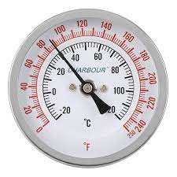

Que hacer si la quieres crujiente?
¿Cuánto tiempo hay que cocinar la pizza para que quede crujiente?.
La temperatura: La temperatura es uno de los parámetros más importantes que tiene que considerar para comprar un horno. Los hornos alcanzan temperaturas diferentes y sobre todo transmiten el calor de forma distinta. Un horno eléctrico
apenas puede alcanzar los 250°C mientras que un horno de leña llega a los 500°C.
En hornos con cúpula que usan la llama (de leña, de gas o híbridos) la pizza se cocina tanto desde arriba como desde abajo gracias a la combinación de conducción e irradiación que reduce los tiempos de cocción a unos pocos minutos.
El tiempo de cocción:El tiempo de cocción depende del tipo de pizza que vamos a cocinar y del modelo de horno.
El horno de leña tarda 2 minutos en cocinar la pizza mientras que el de gas alcanza una temperatura un poco más alta que la del horno eléctrico y cocina una pizza en 5 minutos.
Al contrario, para comer una pizza cocinada en un horno eléctrico tendrá que esperar 10-15 minutos.
